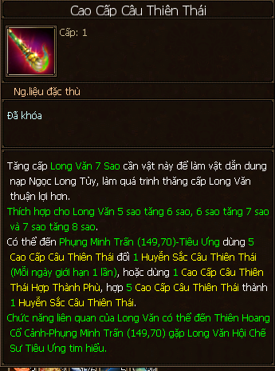
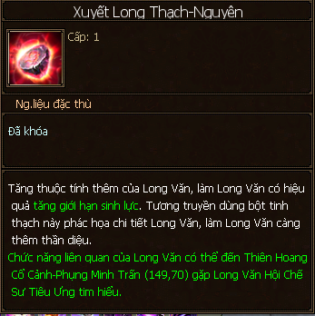
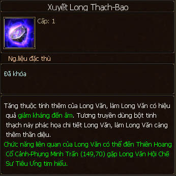

Long Văn¶
Long Văn là một vật phẩm lâu đời trong Thiên Long Bát Bộ, in đậm vào thời khắc còn hệ thống Thế Tộc trong game.
Long Văn đóng vai trò rất quan trọng trong việc xây dựng nhân vật bởi một số thuộc tính mở rộng của nó: giảm kháng âm và tăng giới hạn sinh lực.
Hình ảnh vật phẩm Long Văn có chú thích vị trí cấp độ sao, thuộc tính chính, thuộc tính mở rộng¶
Các chức năng liên quan đến Long Văn có thể thao tác tại Phụng Minh Trấn - NPC Tiêu Ưng (149, 70).
NPC Tiêu Ưng tại Phụng Minh Trấn cung cấp các thao tác và thông tin liên quan đến Long Văn¶
Cấp Độ Long Văn¶
Cấp tối đa: 100.
Cấp càng cao thì điểm thuộc tính chính càng cao.
Dùng Long Văn bất kỳ (phụ, rác) và các vật phẩm như Chú Văn Huyết Ngọc (+ 5 điểm trưởng thành), Chú Văn Tinh Ngọc (+ 10) để tăng điểm trưởng thành giúp cho Long Văn chính thăng cấp.
Từ cấp |
Đến cấp |
Số lượng/cấp |
Tổng cộng |
|---|---|---|---|
1 |
10 |
1 |
10 |
11 |
20 |
2 |
20 |
21 |
30 |
3 |
30 |
31 |
40 |
5 |
50 |
41 |
50 |
8 |
80 |
51 |
60 |
13 |
130 |
61 |
70 |
21 |
210 |
71 |
80 |
34 |
340 |
81 |
90 |
55 |
550 |
91 |
100 |
89 |
890 |
TC |
2310 |
Cấp Sao Long Văn¶
Cấp sao tối đa: 9.
Cấp sao càng cao thì điểm thuộc tính chính càng cao.
Dùng vật phẩm Câu Thiên Thái Sơ cấp/Trung cấp/Cao cấp hoặc Huyễn sắc Câu Thiên Thái và Ngọc Long Tủy để nâng sao Long Văn.
Từ cấp |
Đến cấp |
Số lượng Ngọc Long Tủy |
Số lượng Câu Thiên Thái |
|---|---|---|---|
1 |
2 |
30 |
|
2 |
3 |
60 |
|
3 |
4 |
120 |
|
4 |
5 |
240 |
|
5 |
6 |
400 |
30 Câu Thiên Thái Sơ Cấp |
6 |
7 |
400 |
60 Câu Thiên Thái Trung Cấp |
7 |
8 |
400 |
120 Câu Thiên Thái Cao Cấp |
8 |
9 |
600 |
300 Huyễn Sắc Câu Thiên Thái |
Có thể dùng Câu thiên thái cấp cao hơn thay cho Câu thiên thái cấp thấp lúc tăng sao.
Ngọc Long Tủy: phụ bản Binh Thánh Kỳ Trận, Phụng Minh Vương Lăng.

Câu Thiên Thái:
Sơ cấp/Trung cấp: Phụ bản Phụng Minh Vương Lăng, Hoạt động Cửu Lê Thủ Vệ.
Cao cấp: Phụ bản Phụng Minh Vương Lăng.
Huyễn Sắc Câu Thiên Thái: mỗi ngày được 1 lần hợp 5 Câu thiên thái cao cấp thành 1 huyễn sắc câu thiên thái tại Phụng Minh Trấn - NPC Tiêu Ưng.
Thuộc Tính Chính¶
Tùy theo cấp độ long văn thì số dòng thuộc tính có thể tẩy ra nhiều hay ít.
Dùng vật phẩm Tịnh Vân Thủy (phụ bản Binh Thánh Kỳ Trận) để tẩy thuộc tính chính.

Các dòng thuộc tính được ưa chuộng: Thể Lực và tăng giới hạn sinh lực.
Thuộc Tính Mở Rộng¶
Cấp tối đa: 10
Có 3 dòng thuộc tính mở rộng:
Tăng giới hạn sinh lực: dùng vật phẩm Xuyết Long Thạch - Nguyên để tăng cấp.
Tăng giảm kháng âm thuộc tính: dùng vật phẩm Xuyết Long Thạch - Bạo để tăng cấp.
Tăng thuộc tính tấn công: dùng vật phẩm Xuyết Long Thạch - Thương để tăng cấp.

Xuyết Long Thạch có được từ phụ bản Phụng Minh Vương Lăng, hoạt động Cửu Lê Thủ Vệ.
Kinh Nghiệm¶
Tập trung nâng cấp thuộc tính mở rộng của Long Văn càng sớm càng tốt để đấy tối đa 3 dòng lên cấp 10 và cũng bởi vì điểm cộng của 3 dòng này không bị ảnh hưởng bởi cấp độ và cấp sao của Long Văn.
Nếu muốn tối đa lượng máu của nhân vật thì cố gắng dùng Tịnh Vân Thủy tẩy Long Văn ra cả 2 dòng: + Thể Lực, + Giới hạn sinh lực trên thuộc tính chính của Long Văn, và nâng cấp tối đa (cấp 10) dòng + Giới hạn sinh lực trên thuộc tính mở rộng.
Thuộc tính mở rộng tăng giảm kháng thuộc tính đến âm ảnh hưởng quan trọng đến sát thương thuộc tính của nhân vật.